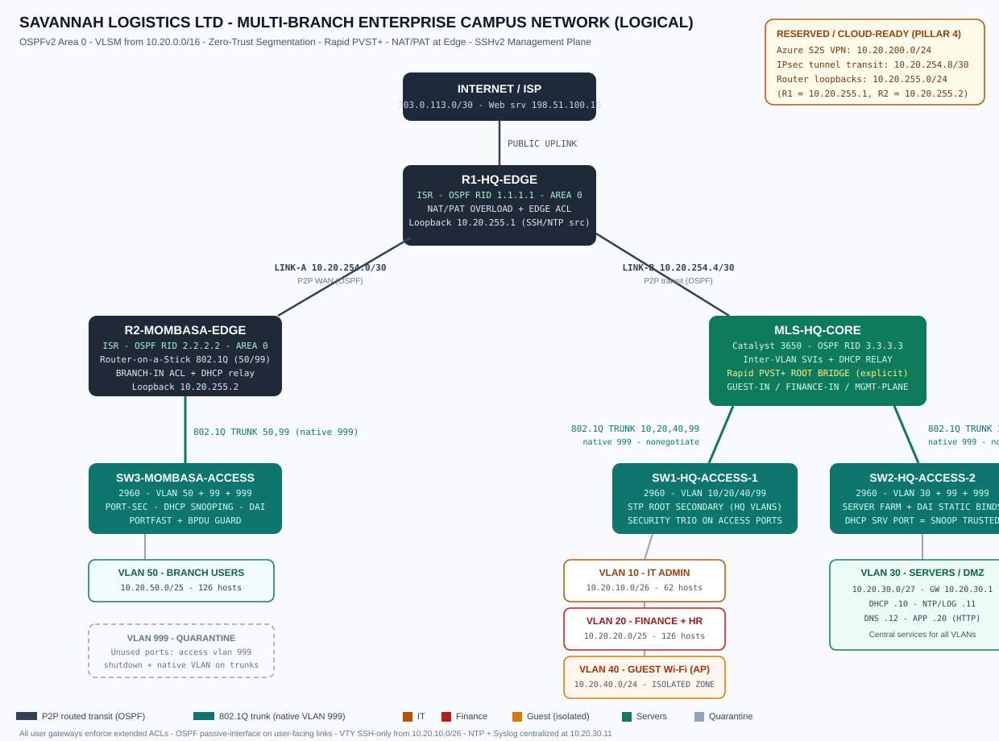

Reference · topology
Topology, cabling and device inventory
Routed point-to-point WAN/transit links between sites — no trunks ever cross the WAN, so VLANs stay strictly site-local. Cabling below is port-level so the build can be wired exactly as documented. Source of truth: topology.md.

Cabling and link inventory
| Link | Endpoint A | Endpoint B | Type | Subnet / VLANs | Notes |
|---|---|---|---|---|---|
| Public uplink | R1 Gi0/0 | ISP | Routed L3 | 203.0.113.0/30 (R1 = .2) | NAT outside, EDGE-INBOUND inbound — RFC 5737 lab range |
| Link A | R1 Gi0/2 | R2 Gi0/0 | Routed L3 p2p | 10.20.254.0/30 | OSPF transit, ip nat inside on the R1 side |
| Link B | R1 Gi0/1 | MLS Gi1/1/1 | Routed L3 p2p | 10.20.254.4/30 | OSPF transit, routed port on MLS (no switchport) |
| Branch trunk | R2 Gi0/1 | SW3 Gi0/1 | 802.1Q trunk | VLANs 50, 99 · native 999 | Router-on-a-stick: sub-ifs .50 (10.20.50.1/25) and .99 (10.20.99.17/28) |
| HQ trunk 1 | MLS Gi1/0/1 | SW1 Gi0/1 | 802.1Q trunk | VLANs 10, 20, 40, 99 · native 999 | nonegotiate · snooping/DAI trusted on the SW1 side |
| HQ trunk 2 | MLS Gi1/0/2 | SW2 Gi0/1 | 802.1Q trunk | VLANs 30, 99 · native 999 | nonegotiate · trusted on the SW2 side |
| SW1 access | Fa0/1–2 · Fa0/3–10 · Fa0/11 · Fa0/12–18 | IT PCs · Finance PCs · Guest AP · Wired guests | Access | VLAN 10 / 20 / 40 / 40 | PortFast + BPDU Guard + Port Security (max 2; AP port max 10, restrict) |
| SW2 access | Fa0/1–4 | Servers (DHCP, NTP/Log, DNS, APP) | Access | VLAN 30 | Fa0/1 = DHCP server (snooping trusted); static ip source binding entries for DAI |
| SW3 access | Fa0/1–16 | Branch PCs | Access | VLAN 50 | PortFast + BPDU Guard + Port Security |
| Unused ports | All switches | — | Access | VLAN 999 | Administratively shutdown (quarantine) |
Device inventory
| Device | Platform | Role | Location | Key interfaces |
|---|---|---|---|---|
| R1-HQ-EDGE | ISR 2911 (PT) · ISR 4331 (prod) | Perimeter router: NAT/PAT, north-south edge ACL, OSPF edge, default route to ISP | Nairobi HQ | Gi0/0 (ISP) · Gi0/1 (Link B) · Gi0/2 (Link A) · Lo0 |
| R2-MOMBASA-EDGE | ISR 2911 (PT) · ISR 4331 (prod) | Branch gateway: router-on-a-stick for VLAN 50/99, branch ACL, DHCP relay | Mombasa | Gi0/0 (Link A) · Gi0/1 (trunk .50/.99) · Lo0 |
| MLS-HQ-CORE | Catalyst 3650-24PS | Inter-VLAN routing (SVIs), Rapid PVST+ root, OSPF, DHCP relay, gateway ACLs | Nairobi HQ (core) | Gi1/1/1 (routed p2p) · Gi1/0/1–2 (trunks) · SVI 10/20/30/40/99 |
| SW1-HQ-ACCESS-1 | Catalyst 2960-24TT | HQ user access: IT (10), Finance (20), Guest Wi-Fi + wired (40) | Nairobi HQ | Gi0/1 uplink · Fa0/1–18 access · Fa0/19–24 quarantine |
| SW2-HQ-ACCESS-2 | Catalyst 2960-24TT | HQ server access: VLAN 30 | Nairobi HQ | Gi0/1 uplink · Fa0/1–4 servers · Fa0/5–24 quarantine |
| SW3-MOMBASA-ACCESS | Catalyst 2960-24TT | Branch user access: VLAN 50 | Mombasa | Gi0/1 trunk · Fa0/1–16 access · Fa0/17–24 quarantine |
Management endpoints (SSH targets)
| Device | Management IP | Gateway | NTP / Syslog source interface |
|---|---|---|---|
| R1-HQ-EDGE | 10.20.255.1 (Loopback0 /32) | OSPF-learned | Loopback0 |
| R2-MOMBASA-EDGE | 10.20.255.2 (Loopback0 /32) | OSPF-learned | Loopback0 |
| MLS-HQ-CORE | 10.20.99.1 (SVI 99) | n/a (L3 switch) | Vlan99 |
| SW1-HQ-ACCESS-1 | 10.20.99.2 (SVI 99) | 10.20.99.1 | Vlan99 |
| SW2-HQ-ACCESS-2 | 10.20.99.3 (SVI 99) | 10.20.99.1 | Vlan99 |
| SW3-MOMBASA-ACCESS | 10.20.99.18 (SVI 99) | 10.20.99.17 | Vlan99 |
Architectural decisions
- Routed point-to-point WAN/transit links, not trunks. Link A and Link B are clean /30s in OSPF area 0. No user traffic rides a transit subnet and no trunks cross the WAN — VLANs are strictly site-local.
- Layer-3 boundary at the core. HQ user VLAN gateways terminate as SVIs on MLS-HQ-CORE (wire-speed inter-VLAN routing). R1 exists for NAT/PAT, the perimeter ACL and the WAN — the classic collapsed-core pattern.
- Explicit STP root. MLS-HQ-CORE is
spanning-tree vlan … root primaryfor every VLAN; SW1 is Root Secondary for the HQ user VLANs. Root election is never left to chance. - Hardened native VLAN. Every trunk uses native VLAN 999 (the unrouted quarantine VLAN) with DTP disabled (
switchport nonegotiate). A VLAN-hopping double-tag attempt lands in a VLAN with no hosts and no gateway. - Management block site-split. VLAN 99 cannot span the routed WAN, so the 10.20.99.0/27 block is sub-allocated: 10.20.99.0/28 (HQ) and 10.20.99.16/28 (branch). Every device stays inside the /27 super-block while OSPF boundaries stay clean.
- Router loopbacks /32 (10.20.255.1/2) serve as stable SSH endpoints, NTP sources and OSPF router-ID anchors — outside the user/mgmt subnets so longest-match routing is unambiguous.
- Passive OSPF everywhere by default.
passive-interface defaulton every router/MLS, with only the transit interfaces non-passive. Routing updates never leak onto user or guest LANs. - Quarantine discipline. No port remains in VLAN 1 anywhere. Unused ports are
access vlan 999+shutdown. VLAN 1 carries zero user, server or management traffic — proven byshow vlan briefon the switching page.
Console evidence — who is connected to whom
recorded · MLS-HQ-CORE# show cdp neighborsMLS-HQ-CORE# show cdp neighbors
Device ID Local Intrfce Holdtme Capability Platform Port ID
SW1-HQ-ACCESS-1 Gig 1/0/1 168 S I 2960-24TT Gig 0/1
SW2-HQ-ACCESS-2 Gig 1/0/2 145 S I 2960-24TT Gig 0/1
R1-HQ-EDGE Gig 1/1/1 132 R B ISR 2911 Gig 0/1
recorded · SW1-HQ-ACCESS-1# show cdp neighbors
SW1-HQ-ACCESS-1# show cdp neighbors
Device ID Local Intrfce Holdtme Capability Platform Port ID
MLS-HQ-CORE Gig 0/1 126 S I 3650-24PS Gig 1/0/1
PC-FIN01 Fas 0/3 141 H PC Fas 0
PC-FIN02 Fas 0/4 137 H PC Fas 0
CDP confirms the cabling table exactly: two trunks + one routed p2p on the core, and endpoint PCs on the access ports. In the lab build, CDP is left on the internal devices and turned toward the ISP side by the EDGE-INBOUND filter (CDP is not routed past R1).